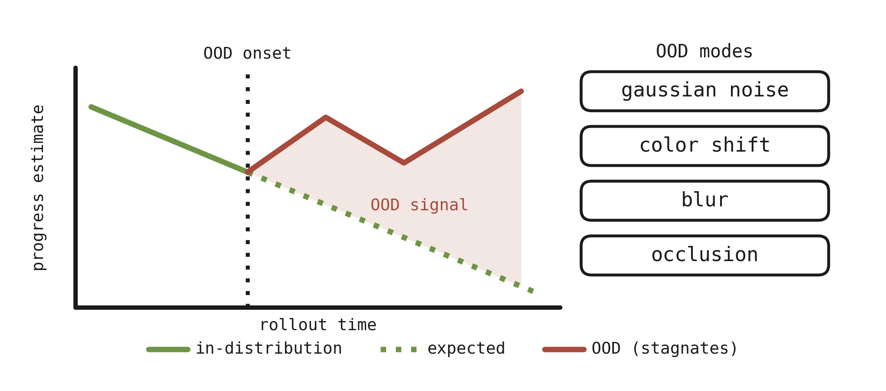

Paper and code links are placeholders. Swap in the arXiv / GitHub URLs once available.
Abstract
Vision-language-action models (VLAs) are moving rapidly towards deployment as general-purpose manipulation policies, but we currently lack basic tools for understanding what these models represent internally or for monitoring them at runtime. Leveraging ideas from mechanistic interpretability, we probe the residual stream of π₀.₅ and find that task progress, the normalized time remaining in a trajectory, is linearly readable from the activations. We find that this signal is present in the pretrained PaliGemma backbone prior to training on any robot-specific data. A single linear probe generalizes to unseen tasks and varies under language counterfactuals when trained on multi-prompt data, but does not enable meaningful steering of the policy. These properties make the signal directly useful for instrumenting deployed VLAs. We use the probe as a simple label-free OOD detector, which detects stalled task progress, and find it competitive with state-of-the-art methods. Our results suggest that VLAs have rich, linearly readable internal representations of semantic quantities like task progress, and that learning to read these signals offers a lightweight, interpretable path toward monitoring deployed visuomotor policies.
Saying that a model "represents" a quantity is ambiguous: it can mean anything from the quantity being recoverable from the activations to the model actually using it to choose its actions. We separate the claim into three concrete, increasingly demanding definitions.
We estimate task progress by fitting a linear probe to π₀.₅'s residual stream. The policy is left frozen, the regression targets are derived from the rollouts themselves, and the resulting readout requires no forward passes beyond the ones the policy already performs.

- Data collection. We roll out π₀.₅ on manipulation episodes and assign each timestep t of an episode of length T the target τt = (T − t) / T, the normalized time remaining. Targets follow from the episode boundaries and require no additional annotation.
- Activation extraction. During each rollout we cache the residual-stream activation zit at every layer i. Since the probe reads the residual stream rather than a task-specific head, the same procedure applies to the pretrained PaliGemma backbone prior to any robot-specific training.
- Probe training. For each layer we fit φ(zi) = wTzi + b to τ. We restrict the probe to be linear so that its accuracy reflects how accessible the quantity is in the representation, rather than the capacity of the probe itself.
- Evaluation. The fitted probe is then assessed for weak and strong decodability, for steerability under activation edits, and as a label-free OOD detector.
Watch the probe track the episode in real time. The trace is the probe's estimate of how much of the task is left, drawn as the rollout plays.
Same episode, same probe, but we swap the target noun in the instruction. A probe that really tracks progress should notice. A naive one doesn't.
Injecting a boosted progress value along the probe direction does not push the policy toward the behavior that value implies. Progress is readable but not a control handle.
In a healthy rollout, task progress falls steadily toward zero. When the policy leaves its training distribution or simply fails, that descent stops. Progress stalls, drifts, or even reverses. The model's own sense of how much is left breaks down at the same moment the episode does, so we can use it as a general failure signal instead of a detector tuned to one kind of corruption.

In-distribution, the probe's progress estimate tracks the expected descent. Once the rollout goes OOD (gaussian noise, color shift, blur, occlusion), it stops descending. That stall is the failure signal, and reading it needs no labels.
Paper
Decoding Task Progress from VLA Representations. Submitted to the 10th Conference on Robot Learning (CoRL 2026).
Read on arXiv (placeholder)Code
Probe training, activation extraction, and OOD detection code for reproducing our experiments on π₀.₅ and π₀.
View on GitHub (placeholder)@inproceedings{bhardwaj2026decoding,
title={Decoding Task Progress from VLA Representations},
author={Bhardwaj, Atiksh and Duan, Edward and Dan, Prithwish and Ma, Wei-Chiu and Culbertson, Preston},
booktitle={Conference on Robot Learning (CoRL)},
year={2026}
}